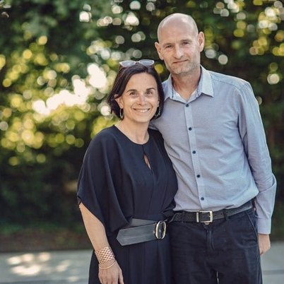
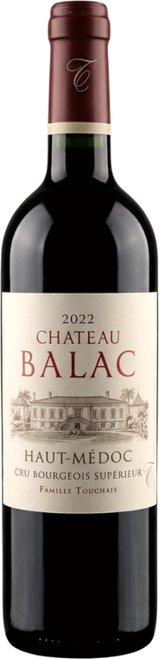
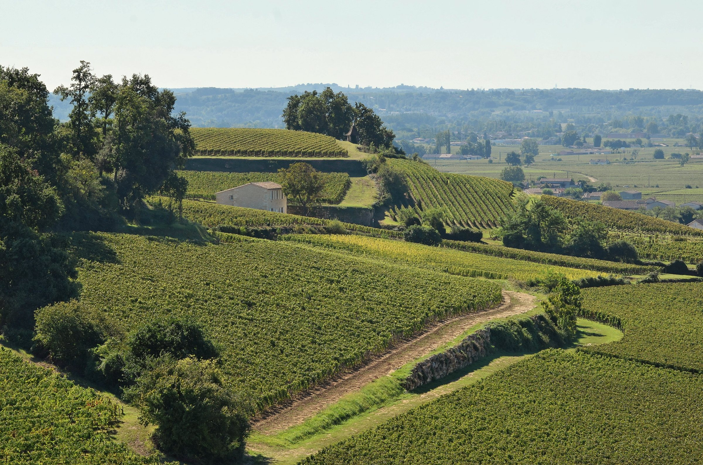

| Possibilité de panacher | À partir de 120 bts À partir de 180 bts À partir de 300 bts | |||
|---|---|---|---|---|
| AOC Haut-Médoc Cru Bourgeois Supérieur Château Balac Rouge | 2022 | 75 cl | 7,71€ 7,59€ 7,50€ | |
| AOC Haut-Médoc Cru Bourgeois Supérieur Château Balac Rouge | 2018 | 75 cl | 7,25€ 7,13€ 7,00€ | |
| VDF Balac sans sulfites | 2022 | 75 cl | 6,90€ 6,80€ 6,70€ | |
| VDF L’inopiné de Balac | 2021 | 75 cl | 6,30€ 6,20€ 6,10€ | |
| VDF Syrah de Balac | 2022 | 75 cl | 8,50€ 8,40€ 8,30€ | |
* Prix de la bouteille H.T. hors frais de transport.
Offre possible en fonction du volume.
